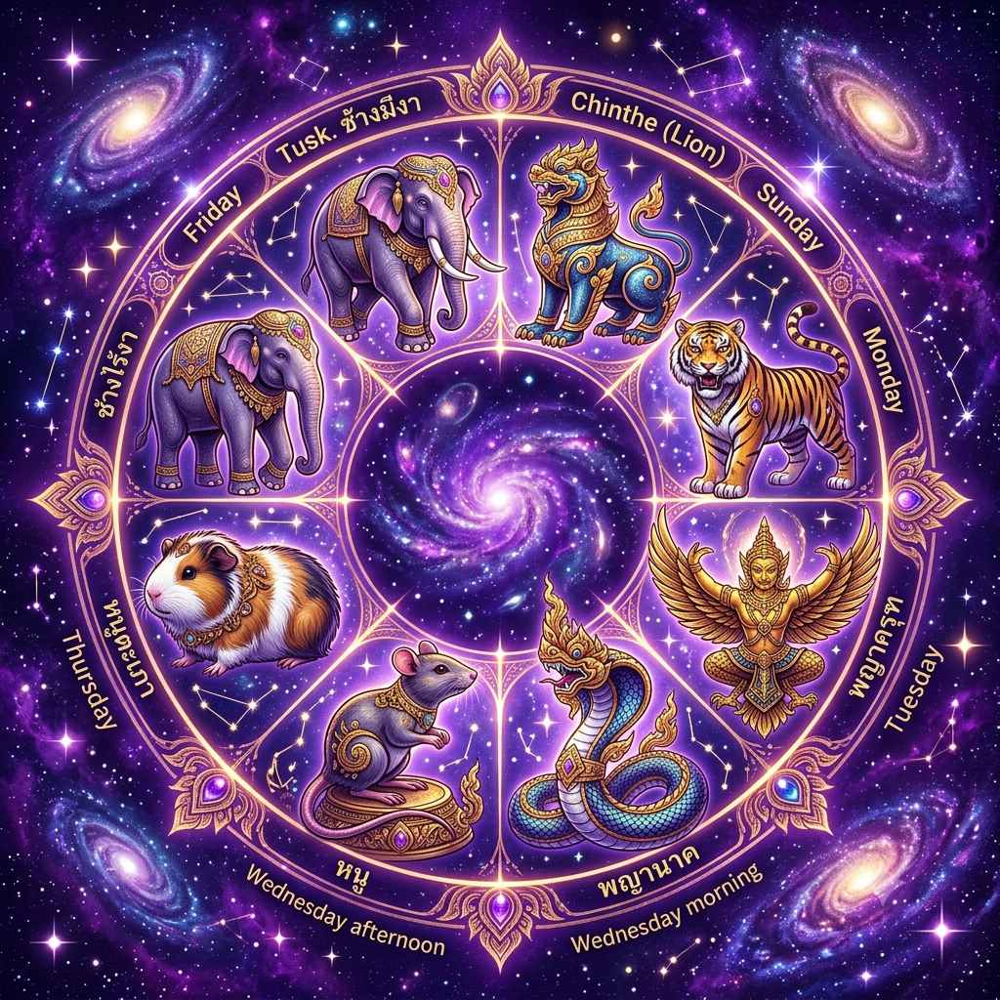
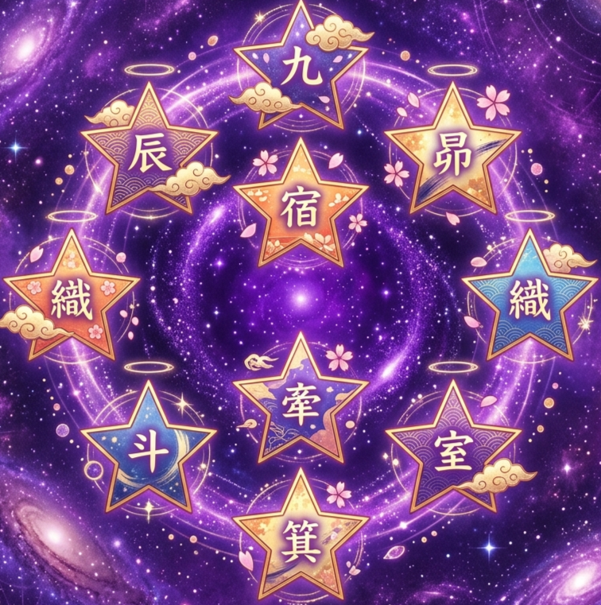
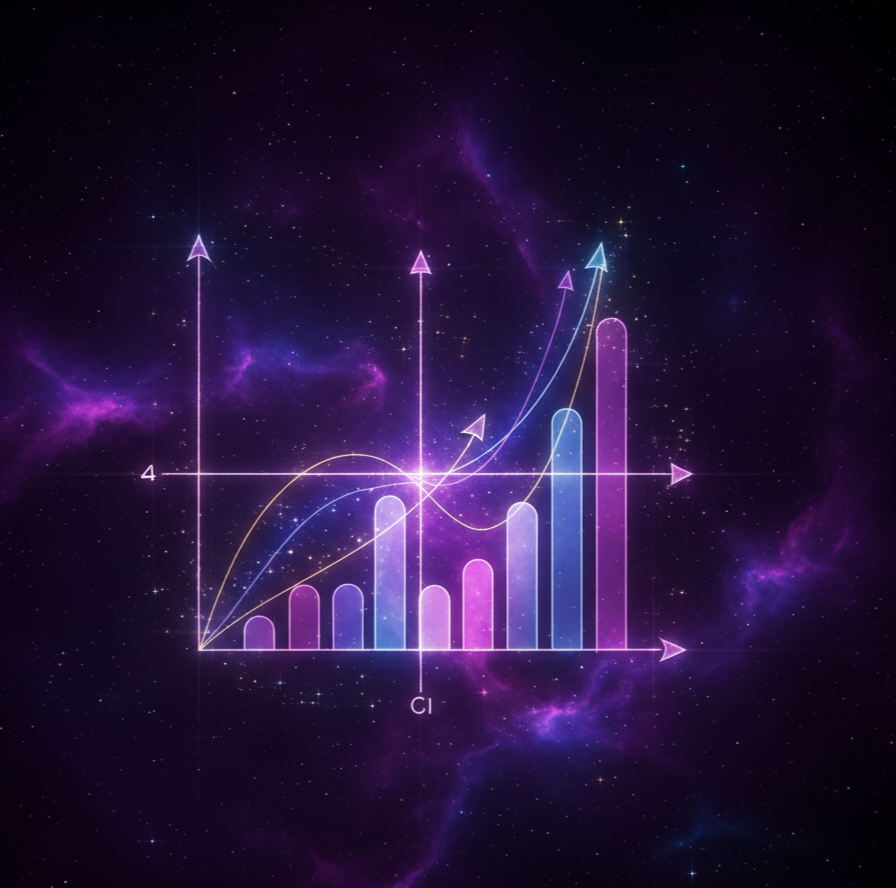
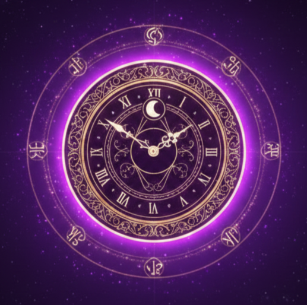
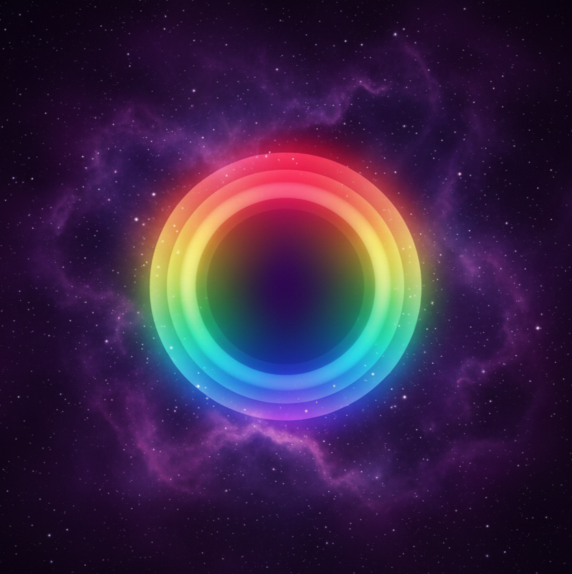

✨ โหราศาสตร์อื่นๆ
ศาสตร์ดูดวงจากทั่วโลก
มายัน อาหรับ เซลติก และศาสตร์ลึกลับสากลค่ะ
มายัน อาหรับ เซลติก และศาสตร์ลึกลับสากลค่ะ
✨ ฟรี

🐘'">มหาโพธิ์
สัตว์ประจำวันเกิด 8 ทิศ ศาสตร์โบราณจากพม่าค่ะ
ฟรี
›

⭐'">คิวเซอิ
ดวงชะตา 9 ดาวญี่ปุ่น บอกนิสัยและทิศมงคลประจำตัวค่ะ
ฟรี
›
✦ พรีเมียม

📊'">Biorhythm กราฟชีวิต
วิเคราะห์วงจรพลังงานร่างกาย อารมณ์ สติปัญญา จากวันเกิดค่ะ
🪙 10
›

🔮'">Horary Astrology
ไม่ต้องรู้วันเกิด! ถามคำถามในใจ ดวงดาว ณ เวลานั้นจะตอบค่ะ
🪙 10
›

🔮'">Soul Aura Color
ค้นพบสีออร่าดวงจิตประจำตัวคุณตามศาสตร์พลังงานจิตวิญญาณค่ะ
🪙 19
›
🌳'">
Kabbalah Tree of Life
ต้นไม้แห่งชีวิต 10 Sefirot ศาสตร์ลึกลับจากคับบาลาห์ค่ะ
🪙 19
›
🌿'">
Medical Astrology
โหราศาสตร์การแพทย์โบราณ วิเคราะห์สุขภาพจากราศีและดาวเคราะห์ค่ะ
🪙 29
›
🔮'">
Destiny - เจาะลึกดวงชะตา
โหราศาสตร์ประยุกต์ 5 ศาสตร์ + ดาวจรปีนี้ วิเคราะห์ครบทุกมิติชีวิตค่ะ
🪙 79
›